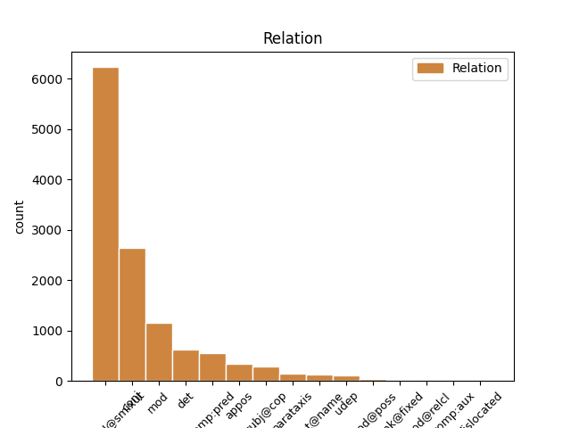
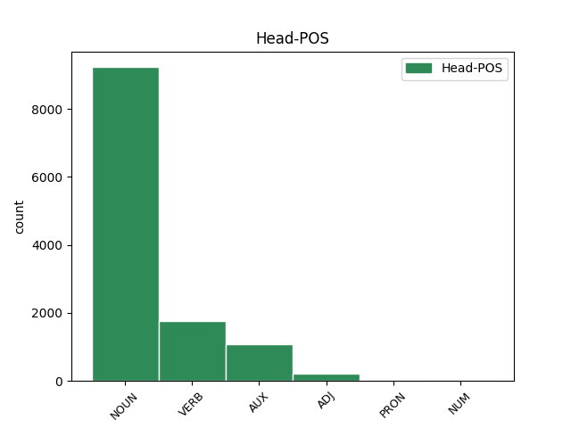
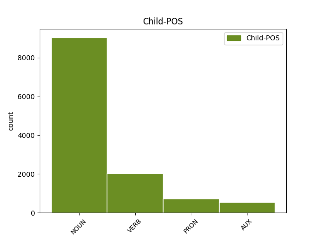

Distribution of features within this leaf



Agreement Rules sorted by frequency.
- When the dependent token is the compound(compound@smixut) of the head token, and the dependent token is NOUN.
1 ל _ _ _ _ 0 _ _ _
2 גליל _ _ _ _ 0 _ _ _
3 לא _ _ _ _ 0 _ _ _
4 היתה _ _ _ _ 0 _ _ _
5 תשובה _ _ _ _ 0 _ _ _
6 ל _ _ _ _ 0 _ _ _
7 ה_ _ _ _ _ 0 _ _ _
8 יכולת _ _ _ _ 0 _ _ _
9 ה _ _ _ _ 0 _ _ _
10 אישית _ _ _ _ 0 _ _ _
11 ה _ _ _ _ 0 _ _ _
12 גבוהה _ _ _ _ 0 _ _ _
13 של _ _ _ _ 0 _ _ _
14 פירסון _ _ _ _ 0 _ _ _
15 , _ _ _ _ 0 _ _ _
16 ש _ _ _ _ 0 _ _ _
17 קלע _ _ _ _ 0 _ _ _
18 33 _ _ _ _ 0 _ _ _
19 נקודות _ _ _ _ 0 _ _ _
20 ו _ _ _ _ 0 _ _ _
21 ריכז _ _ _ _ 0 _ _ _
22 את _ _ _ _ 0 _ _ _
23 משחק משחק NOUN NOUN Definite=Cons|Gender=Masc|Number=Sing 0 _ _ _
24 קבוצה_ קבוצה NOUN NOUN Definite=Def|Gender=Fem|Number=Sing 23 compound@smixut _ _
25 _של_ _ _ _ _ 0 _ _ _
26 _הוא _ _ _ _ 0 _ _ _
27 במשך _ _ _ _ 0 _ _ _
28 דקות _ _ _ _ 0 _ _ _
29 רבות _ _ _ _ 0 _ _ _
30 . _ _ _ _ 0 _ _ _
1 ל _ _ _ _ 0 _ _ _
2 גליל _ _ _ _ 0 _ _ _
3 לא _ _ _ _ 0 _ _ _
4 היתה _ _ _ _ 0 _ _ _
5 תשובה _ _ _ _ 0 _ _ _
6 ל _ _ _ _ 0 _ _ _
7 ה_ _ _ _ _ 0 _ _ _
8 יכולת _ _ _ _ 0 _ _ _
9 ה _ _ _ _ 0 _ _ _
10 אישית _ _ _ _ 0 _ _ _
11 ה _ _ _ _ 0 _ _ _
12 גבוהה _ _ _ _ 0 _ _ _
13 של _ _ _ _ 0 _ _ _
14 פירסון _ _ _ _ 0 _ _ _
15 , _ _ _ _ 0 _ _ _
16 ש _ _ _ _ 0 _ _ _
17 קלע קלע VERB VERB Gender=Masc|HebBinyan=PAAL|Number=Sing|Person=3|Tense=Past|Voice=Act 0 _ _ _
18 33 _ _ _ _ 0 _ _ _
19 נקודות _ _ _ _ 0 _ _ _
20 ו _ _ _ _ 0 _ _ _
21 ריכז ריכז VERB VERB Gender=Masc|HebBinyan=PIEL|Number=Sing|Person=3|Tense=Past|Voice=Act 17 conj _ _
22 את _ _ _ _ 0 _ _ _
23 משחק _ _ _ _ 0 _ _ _
24 קבוצה_ _ _ _ _ 0 _ _ _
25 _של_ _ _ _ _ 0 _ _ _
26 _הוא _ _ _ _ 0 _ _ _
27 במשך _ _ _ _ 0 _ _ _
28 דקות _ _ _ _ 0 _ _ _
29 רבות _ _ _ _ 0 _ _ _
30 . _ _ _ _ 0 _ _ _
1 בעיה_ _ _ _ _ 0 _ _ _
2 _של_ _ _ _ _ 0 _ _ _
3 _היא _ _ _ _ 0 _ _ _
4 ה _ _ _ _ 0 _ _ _
5 עיקרית _ _ _ _ 0 _ _ _
6 : _ _ _ _ 0 _ _ _
7 משחק משחק NOUN NOUN Gender=Masc|Number=Sing 0 _ _ _
8 קבוצתי _ _ _ _ 0 _ _ _
9 לקוי _ _ _ _ 0 _ _ _
10 ו _ _ _ _ 0 _ _ _
11 משחק משחק NOUN NOUN Gender=Masc|Number=Sing 7 conj _ _
12 אישי _ _ _ _ 0 _ _ _
13 מדי _ _ _ _ 0 _ _ _
14 של _ _ _ _ 0 _ _ _
15 שחקני _ _ _ _ 0 _ _ _
16 ה _ _ _ _ 0 _ _ _
17 חיזוק _ _ _ _ 0 _ _ _
18 הנדרסון _ _ _ _ 0 _ _ _
19 ו _ _ _ _ 0 _ _ _
20 גיבסון _ _ _ _ 0 _ _ _
21 . _ _ _ _ 0 _ _ _
1 אין _ _ _ _ 0 _ _ _
2 מנוס _ _ _ _ 0 _ _ _
3 מ _ _ _ _ 0 _ _ _
4 ה _ _ _ _ 0 _ _ _
5 מסקנה _ _ _ _ 0 _ _ _
6 : _ _ _ _ 0 _ _ _
7 מיקי _ _ _ _ 0 _ _ _
8 נשאר _ _ _ _ 0 _ _ _
9 מיקי _ _ _ _ 0 _ _ _
10 אבל _ _ _ _ 0 _ _ _
11 ה _ _ _ _ 0 _ _ _
12 ליגה _ _ _ _ 0 _ _ _
13 ה _ _ _ _ 0 _ _ _
14 זו _ _ _ _ 0 _ _ _
15 כבר _ _ _ _ 0 _ _ _
16 לא _ _ _ _ 0 _ _ _
17 אותה אותו PRON PRON Definite=Def|Gender=Fem|Number=Sing|Person=3|PronType=Prs 18 det _ _
18 ליגה ליגה NOUN NOUN Gender=Fem|Number=Sing 0 _ _ _
19 . _ _ _ _ 0 _ _ _
1 כאשר _ _ _ _ 0 _ _ _
2 ה _ _ _ _ 0 _ _ _
3 פועל פועל NOUN NOUN Gender=Masc|Number=Sing 0 _ _ _
4 תל תל NOUN NOUN Definite=Cons|Gender=Masc|Number=Sing 3 mod _ _
5 אביב _ _ _ _ 0 _ _ _
6 משחק _ _ _ _ 0 _ _ _
7 ב _ _ _ _ 0 _ _ _
8 חמישיה _ _ _ _ 0 _ _ _
9 ה _ _ _ _ 0 _ _ _
10 כוללת _ _ _ _ 0 _ _ _
11 ארבעה _ _ _ _ 0 _ _ _
12 שחומי _ _ _ _ 0 _ _ _
13 עור _ _ _ _ 0 _ _ _
14 אמריקאים _ _ _ _ 0 _ _ _
15 פלוס _ _ _ _ 0 _ _ _
16 עמוס _ _ _ _ 0 _ _ _
17 פרישמן _ _ _ _ 0 _ _ _
18 זה _ _ _ _ 0 _ _ _
19 בשבילי _ _ _ _ 0 _ _ _
20 _אני _ _ _ _ 0 _ _ _
21 סאברס _ _ _ _ 0 _ _ _
22 . _ _ _ _ 0 _ _ _
1 27 _ _ _ _ 0 _ _ _
2 ב _ _ _ _ 0 _ _ _
3 נובמבר _ _ _ _ 0 _ _ _
4 הוא הוא AUX AUX Gender=Masc|Number=Sing|Person=3|Polarity=Pos|VerbForm=Part|VerbType=Cop 0 _ _ _
5 ה _ _ _ _ 0 _ _ _
6 תאריך תאריך NOUN NOUN Gender=Masc|Number=Sing 4 comp:pred _ _
7 ה _ _ _ _ 0 _ _ _
8 אחרון _ _ _ _ 0 _ _ _
9 ל _ _ _ _ 0 _ _ _
10 החלפת _ _ _ _ 0 _ _ _
11 שחקנים _ _ _ _ 0 _ _ _
12 זרים _ _ _ _ 0 _ _ _
13 ה _ _ _ _ 0 _ _ _
14 ארץ _ _ _ _ 0 _ _ _
15 ו _ _ _ _ 0 _ _ _
16 ב _ _ _ _ 0 _ _ _
17 אירופה _ _ _ _ 0 _ _ _
18 . _ _ _ _ 0 _ _ _
1 מה _ _ _ _ 0 _ _ _
2 ש _ _ _ _ 0 _ _ _
3 אמור _ _ _ _ 0 _ _ _
4 היה _ _ _ _ 0 _ _ _
5 להיות _ _ _ _ 0 _ _ _
6 מאבק _ _ _ _ 0 _ _ _
7 צמרת _ _ _ _ 0 _ _ _
8 שקול _ _ _ _ 0 _ _ _
9 , _ _ _ _ 0 _ _ _
10 הפך _ _ _ _ 0 _ _ _
11 במהרה _ _ _ _ 0 _ _ _
12 ל _ _ _ _ 0 _ _ _
13 מיפגן _ _ _ _ 0 _ _ _
14 חד _ _ _ _ 0 _ _ _
15 - _ _ _ _ 0 _ _ _
16 סיטרי _ _ _ _ 0 _ _ _
17 , _ _ _ _ 0 _ _ _
18 בעקבות _ _ _ _ 0 _ _ _
19 משחק משחק NOUN NOUN Gender=Masc|Number=Sing 0 _ _ _
20 שובה _ VERB VERB Definite=Cons|Gender=Masc|HebBinyan=PAAL|Number=Sing|Person=1,2,3|VerbForm=Part|Voice=Act 19 mod _ _
21 עין _ _ _ _ 0 _ _ _
22 ו _ _ _ _ 0 _ _ _
23 תכליתי _ _ _ _ 0 _ _ _
24 של _ _ _ _ 0 _ _ _
25 מכבי _ _ _ _ 0 _ _ _
26 ראשל"ץ _ _ _ _ 0 _ _ _
27 ש _ _ _ _ 0 _ _ _
28 ניצח _ _ _ _ 0 _ _ _
29 ללא _ _ _ _ 0 _ _ _
30 מאמץ _ _ _ _ 0 _ _ _
31 09 _ _ _ _ 0 _ _ _
32 931 _ _ _ _ 0 _ _ _
33 . _ _ _ _ 0 _ _ _
1 יתו _ _ _ _ 0 _ _ _
2 אינו אינו AUX AUX Gender=Masc|Number=Sing|Person=3|Polarity=Neg|VerbForm=Part|VerbType=Cop 4 mod _ _
3 עוד _ _ _ _ 0 _ _ _
4 מבצר_ מבצר NOUN NOUN Definite=Def|Gender=Masc|Number=Sing 0 _ _ _
5 _של_ _ _ _ _ 0 _ _ _
6 _הוא _ _ _ _ 0 _ _ _
7 . _ _ _ _ 0 _ _ _
1 ה _ _ _ _ 0 _ _ _
2 אתר אתר NOUN NOUN Gender=Masc|Number=Sing 9 subj@cop _ _
3 ה _ _ _ _ 0 _ _ _
4 עיקרי _ _ _ _ 0 _ _ _
5 ב_ _ _ _ _ 0 _ _ _
6 _הוא _ _ _ _ 0 _ _ _
7 מוצעים _ _ _ _ 0 _ _ _
8 מגרשים _ _ _ _ 0 _ _ _
9 הוא הוא AUX AUX Gender=Masc|Number=Sing|Person=3|Polarity=Pos|VerbForm=Part|VerbType=Cop 0 _ _ _
10 רעות _ _ _ _ 0 _ _ _
11 , _ _ _ _ 0 _ _ _
12 ש _ _ _ _ 0 _ _ _
13 ליד _ _ _ _ 0 _ _ _
14 ה _ _ _ _ 0 _ _ _
15 ישוב _ _ _ _ 0 _ _ _
16 מכבים _ _ _ _ 0 _ _ _
17 . _ _ _ _ 0 _ _ _
1 ב _ _ _ _ 0 _ _ _
2 ראשל"ץ _ _ _ _ 0 _ _ _
3 היו _ _ _ _ 0 _ _ _
4 כולם _ _ _ _ 0 _ _ _
5 ב _ _ _ _ 0 _ _ _
6 מיטב_ _ _ _ _ 0 _ _ _
7 _של_ _ _ _ _ 0 _ _ _
8 _הם _ _ _ _ 0 _ _ _
9 : _ _ _ _ 0 _ _ _
10 ארבעה _ _ _ _ 0 _ _ _
11 שחקנים _ _ _ _ 0 _ _ _
12 קלעו _ _ _ _ 0 _ _ _
13 נהדר _ _ _ _ 0 _ _ _
14 ( _ _ _ _ 0 _ _ _
15 זלוטיקמן _ _ _ _ 0 _ _ _
16 18 _ _ _ _ 0 _ _ _
17 , _ _ _ _ 0 _ _ _
18 ספנסר _ _ _ _ 0 _ _ _
19 19 _ _ _ _ 0 _ _ _
20 , _ _ _ _ 0 _ _ _
21 בנקס _ _ _ _ 0 _ _ _
22 24 _ _ _ _ 0 _ _ _
23 , _ _ _ _ 0 _ _ _
24 ברקוביץ _ _ _ _ 0 _ _ _
25 28 _ _ _ _ 0 _ _ _
26 ) _ _ _ _ 0 _ _ _
27 ו _ _ _ _ 0 _ _ _
28 ה _ _ _ _ 0 _ _ _
29 רכז _ _ _ _ 0 _ _ _
30 בוסאני _ _ _ _ 0 _ _ _
31 ניווט _ _ _ _ 0 _ _ _
32 כהלכה _ _ _ _ 0 _ _ _
33 את _ _ _ _ 0 _ _ _
34 קבוצה_ _ _ _ _ 0 _ _ _
35 _של_ _ _ _ _ 0 _ _ _
36 _הוא _ _ _ _ 0 _ _ _
37 ו _ _ _ _ 0 _ _ _
38 הוסיף _ _ _ _ 0 _ _ _
39 12 _ _ _ _ 0 _ _ _
40 נקודות נקודה NOUN NOUN Gender=Fem|Number=Plur 0 _ _ _
41 ( _ _ _ _ 0 _ _ _
42 שלוש _ _ _ _ 0 _ _ _
43 שלשות שלשה NOUN NOUN Gender=Fem|Number=Plur 40 appos _ SpaceAfter=No
44 ) _ _ _ _ 0 _ _ _
45 . _ _ _ _ 0 _ _ _
1 הם _ _ _ _ 0 _ _ _
2 היו _ AUX AUX Gender=Fem,Masc|Number=Plur|Person=3|Polarity=Pos|Tense=Past|VerbType=Cop 0 _ _ _
3 פצועים פצע VERB VERB Gender=Masc|HebBinyan=PAAL|Number=Plur|Person=1,2,3|VerbForm=Part|Voice=Act 2 comp:pred _ _
4 כבר _ _ _ _ 0 _ _ _
5 ב _ _ _ _ 0 _ _ _
6 ה_ _ _ _ _ 0 _ _ _
7 שבוע _ _ _ _ 0 _ _ _
8 ש _ _ _ _ 0 _ _ _
9 עבר _ _ _ _ 0 _ _ _
10 , _ _ _ _ 0 _ _ _
11 אך _ _ _ _ 0 _ _ _
12 שיחקו _ _ _ _ 0 _ _ _
13 ב _ _ _ _ 0 _ _ _
14 סוף _ _ _ _ 0 _ _ _
15 ה _ _ _ _ 0 _ _ _
16 שבוע _ _ _ _ 0 _ _ _
17 ו _ _ _ _ 0 _ _ _
18 אף _ _ _ _ 0 _ _ _
19 אחד _ _ _ _ 0 _ _ _
20 מ _ _ _ _ 0 _ _ _
21 ה _ _ _ _ 0 _ _ _
22 שלושה _ _ _ _ 0 _ _ _
23 לא _ _ _ _ 0 _ _ _
24 סיים _ _ _ _ 0 _ _ _
25 את _ _ _ _ 0 _ _ _
26 ה _ _ _ _ 0 _ _ _
27 משחק _ _ _ _ 0 _ _ _
28 " _ _ _ _ 0 _ _ _
29 , _ _ _ _ 0 _ _ _
30 אמר _ _ _ _ 0 _ _ _
31 גדעון _ _ _ _ 0 _ _ _
32 כהן _ _ _ _ 0 _ _ _
33 . _ _ _ _ 0 _ _ _
1 ש22חת _ _ _ _ 0 _ _ _
2 איש _ _ _ _ 0 _ _ _
3 ה _ _ _ _ 0 _ _ _
4 עסקים _ _ _ _ 0 _ _ _
5 מיכאל _ _ _ _ 0 _ _ _
6 עקילוב _ _ _ _ 0 _ _ _
7 החל _ _ _ _ 0 _ _ _
8 לנהל _ _ _ _ 0 _ _ _
9 מו"ם _ _ _ _ 0 _ _ _
10 עם _ _ _ _ 0 _ _ _
11 כמה _ _ _ _ 0 _ _ _
12 גורמים _ _ _ _ 0 _ _ _
13 , _ _ _ _ 0 _ _ _
14 ב _ _ _ _ 0 _ _ _
15 מטרה _ _ _ _ 0 _ _ _
16 להשכיר _ _ _ _ 0 _ _ _
17 ל_ _ _ _ _ 0 _ _ _
18 _הם _ _ _ _ 0 _ _ _
19 את _ _ _ _ 0 _ _ _
20 ה _ _ _ _ 0 _ _ _
21 חנות _ _ _ _ 0 _ _ _
22 ב _ _ _ _ 0 _ _ _
23 רחוב _ _ _ _ 0 _ _ _
24 אלנבי _ _ _ _ 0 _ _ _
25 113 _ _ _ _ 0 _ _ _
26 ב _ _ _ _ 0 _ _ _
27 תל תל NOUN NOUN Definite=Cons|Gender=Masc|Number=Sing 0 _ _ _
28 - _ _ _ _ 0 _ _ _
29 אביב אביב NOUN NOUN Gender=Masc|Number=Sing 27 flat@name _ SpaceAfter=No
30 , _ _ _ _ 0 _ _ _
31 ש _ _ _ _ 0 _ _ _
32 שימשה _ _ _ _ 0 _ _ _
33 ב _ _ _ _ 0 _ _ _
34 ה_ _ _ _ _ 0 _ _ _
35 שנתיים _ _ _ _ 0 _ _ _
36 ה _ _ _ _ 0 _ _ _
37 אחרונות _ _ _ _ 0 _ _ _
38 את _ _ _ _ 0 _ _ _
39 רשת _ _ _ _ 0 _ _ _
40 ה _ _ _ _ 0 _ _ _
41 מסעדת _ _ _ _ 0 _ _ _
42 גפריס _ _ _ _ 0 _ _ _
43 , _ _ _ _ 0 _ _ _
44 ו _ _ _ _ 0 _ _ _
45 נסגרה _ _ _ _ 0 _ _ _
46 עקב _ _ _ _ 0 _ _ _
47 קשיים _ _ _ _ 0 _ _ _
48 . _ _ _ _ 0 _ _ _
1 ה _ _ _ _ 0 _ _ _
2 שער _ _ _ _ 0 _ _ _
3 של _ _ _ _ 0 _ _ _
4 ויאלי _ _ _ _ 0 _ _ _
5 ש _ _ _ _ 0 _ _ _
6 נבע _ _ _ _ 0 _ _ _
7 מ _ _ _ _ 0 _ _ _
8 טעות _ _ _ _ 0 _ _ _
9 שוער _ _ _ _ 0 _ _ _
10 , _ _ _ _ 0 _ _ _
11 הובקע הובקע VERB VERB Gender=Masc|HebBinyan=HUFAL|Number=Sing|Person=3|Tense=Past|Voice=Pass 0 _ _ _
12 12 _ _ _ _ 0 _ _ _
13 דקות _ _ _ _ 0 _ _ _
14 אחר _ _ _ _ 0 _ _ _
15 - _ _ _ _ 0 _ _ _
16 כך _ _ _ _ 0 _ _ _
17 ו _ _ _ _ 0 _ _ _
18 ה _ _ _ _ 0 _ _ _
19 - _ _ _ _ 0 _ _ _
20 04 _ _ _ _ 0 _ _ _
21 היה _ AUX AUX Gender=Masc|Number=Sing|Person=3|Polarity=Pos|Tense=Past|VerbType=Cop 11 conj _ _
22 ב _ _ _ _ 0 _ _ _
23 בעיטת _ _ _ _ 0 _ _ _
24 11 _ _ _ _ 0 _ _ _
25 של _ _ _ _ 0 _ _ _
26 מארקו _ _ _ _ 0 _ _ _
27 בראנקה _ _ _ _ 0 _ _ _
28 . _ _ _ _ 0 _ _ _
1 אך _ _ _ _ 0 _ _ _
2 הוא _ _ _ _ 0 _ _ _
3 לבדו _ _ _ _ 0 _ _ _
4 לא _ _ _ _ 0 _ _ _
5 יכול _ AUX AUX Gender=Masc|Number=Sing|Person=1,2,3|VerbForm=Part|VerbType=Mod 6 comp:pred _ _
6 היה _ AUX AUX Gender=Masc|Number=Sing|Person=3|Polarity=Pos|Tense=Past|VerbType=Cop 0 _ _ _
7 לנצח _ _ _ _ 0 _ _ _
8 את _ _ _ _ 0 _ _ _
9 ה _ _ _ _ 0 _ _ _
10 משחק _ _ _ _ 0 _ _ _
11 . _ _ _ _ 0 _ _ _
1 ב _ _ _ _ 0 _ _ _
2 ראשל"ץ _ _ _ _ 0 _ _ _
3 היו _ AUX AUX Gender=Fem,Masc|Number=Plur|Person=3|Polarity=Pos|Tense=Past|VerbType=Cop 0 _ _ _
4 כולם _ _ _ _ 0 _ _ _
5 ב _ _ _ _ 0 _ _ _
6 מיטב_ _ _ _ _ 0 _ _ _
7 _של_ _ _ _ _ 0 _ _ _
8 _הם _ _ _ _ 0 _ _ _
9 : _ _ _ _ 0 _ _ _
10 ארבעה _ _ _ _ 0 _ _ _
11 שחקנים _ _ _ _ 0 _ _ _
12 קלעו קלע VERB VERB Gender=Fem,Masc|HebBinyan=PAAL|Number=Plur|Person=3|Tense=Past|Voice=Act 3 parataxis _ _
13 נהדר _ _ _ _ 0 _ _ _
14 ( _ _ _ _ 0 _ _ _
15 זלוטיקמן _ _ _ _ 0 _ _ _
16 18 _ _ _ _ 0 _ _ _
17 , _ _ _ _ 0 _ _ _
18 ספנסר _ _ _ _ 0 _ _ _
19 19 _ _ _ _ 0 _ _ _
20 , _ _ _ _ 0 _ _ _
21 בנקס _ _ _ _ 0 _ _ _
22 24 _ _ _ _ 0 _ _ _
23 , _ _ _ _ 0 _ _ _
24 ברקוביץ _ _ _ _ 0 _ _ _
25 28 _ _ _ _ 0 _ _ _
26 ) _ _ _ _ 0 _ _ _
27 ו _ _ _ _ 0 _ _ _
28 ה _ _ _ _ 0 _ _ _
29 רכז _ _ _ _ 0 _ _ _
30 בוסאני _ _ _ _ 0 _ _ _
31 ניווט _ _ _ _ 0 _ _ _
32 כהלכה _ _ _ _ 0 _ _ _
33 את _ _ _ _ 0 _ _ _
34 קבוצה_ _ _ _ _ 0 _ _ _
35 _של_ _ _ _ _ 0 _ _ _
36 _הוא _ _ _ _ 0 _ _ _
37 ו _ _ _ _ 0 _ _ _
38 הוסיף _ _ _ _ 0 _ _ _
39 12 _ _ _ _ 0 _ _ _
40 נקודות _ _ _ _ 0 _ _ _
41 ( _ _ _ _ 0 _ _ _
42 שלוש _ _ _ _ 0 _ _ _
43 שלשות _ _ _ _ 0 _ _ _
44 ) _ _ _ _ 0 _ _ _
45 . _ _ _ _ 0 _ _ _
1 חוטף _ _ _ _ 0 _ _ _
2 ו _ _ _ _ 0 _ _ _
3 קולע _ _ _ _ 0 _ _ _
4 ו _ _ _ _ 0 _ _ _
5 נע _ _ _ _ 0 _ _ _
6 ימינה _ _ _ _ 0 _ _ _
7 ו _ _ _ _ 0 _ _ _
8 שמאלה _ _ _ _ 0 _ _ _
9 , _ _ _ _ 0 _ _ _
10 הצידה _ _ _ _ 0 _ _ _
11 ו _ _ _ _ 0 _ _ _
12 אחורה _ _ _ _ 0 _ _ _
13 ו _ _ _ _ 0 _ _ _
14 בסיבוב _ _ _ _ 0 _ _ _
15 , _ _ _ _ 0 _ _ _
16 גמיש _ _ _ _ 0 _ _ _
17 ו _ _ _ _ 0 _ _ _
18 זריז _ _ _ _ 0 _ _ _
19 ו _ _ _ _ 0 _ _ _
20 שאפתן _ _ _ _ 0 _ _ _
21 כמו _ _ _ _ 0 _ _ _
22 ב _ _ _ _ 0 _ _ _
23 ה_ _ _ _ _ 0 _ _ _
24 ימים יום NOUN NOUN Gender=Masc|HebSource=ConvUncertainHead|Number=Plur 0 _ _ _
25 ה _ _ _ _ 0 _ _ _
26 בלתי _ _ _ _ 0 _ _ _
27 נשכחים _ _ _ _ 0 _ _ _
28 ה _ _ _ _ 0 _ _ _
29 הם הוא PRON PRON Gender=Masc|Number=Plur|Person=3|PronType=Prs 24 mod _ _
30 . _ _ _ _ 0 _ _ _
1 ה _ _ _ _ 0 _ _ _
2 משטרה _ _ _ _ 0 _ _ _
3 נעזרה נעזר VERB VERB Gender=Fem|HebBinyan=NIFAL|Number=Sing|Person=3|Tense=Past|Voice=Mid 37 udep _ _
4 ב _ _ _ _ 0 _ _ _
5 צינורות _ _ _ _ 0 _ _ _
6 מים _ _ _ _ 0 _ _ _
7 , _ _ _ _ 0 _ _ _
8 ב _ _ _ _ 0 _ _ _
9 כלבים _ _ _ _ 0 _ _ _
10 ו _ _ _ _ 0 _ _ _
11 ב _ _ _ _ 0 _ _ _
12 גז _ _ _ _ 0 _ _ _
13 מדמיע _ _ _ _ 0 _ _ _
14 כדי _ _ _ _ 0 _ _ _
15 לפזר _ _ _ _ 0 _ _ _
16 יותר _ _ _ _ 0 _ _ _
17 מ _ _ _ _ 0 _ _ _
18 - _ _ _ _ 0 _ _ _
19 150 _ _ _ _ 0 _ _ _
20 איש _ _ _ _ 0 _ _ _
21 , _ _ _ _ 0 _ _ _
22 רבים _ _ _ _ 0 _ _ _
23 מהם _ _ _ _ 0 _ _ _
24 _הם _ _ _ _ 0 _ _ _
25 עוטי _ _ _ _ 0 _ _ _
26 מסיכות _ _ _ _ 0 _ _ _
27 , _ _ _ _ 0 _ _ _
28 ש _ _ _ _ 0 _ _ _
29 התפרעו _ _ _ _ 0 _ _ _
30 ב _ _ _ _ 0 _ _ _
31 שבת _ _ _ _ 0 _ _ _
32 ב _ _ _ _ 0 _ _ _
33 ה_ _ _ _ _ 0 _ _ _
34 עיר _ _ _ _ 0 _ _ _
35 מאגדבורג _ _ _ _ 0 _ _ _
36 , _ _ _ _ 0 _ _ _
37 סיפר סיפר VERB VERB Gender=Masc|HebBinyan=PIEL|Number=Sing|Person=3|Tense=Past|Voice=Act 0 _ _ _
38 דובר _ _ _ _ 0 _ _ _
39 ה _ _ _ _ 0 _ _ _
40 משטרה _ _ _ _ 0 _ _ _
41 , _ _ _ _ 0 _ _ _
42 יורגן _ _ _ _ 0 _ _ _
43 ויינר _ _ _ _ 0 _ _ _
44 . _ _ _ _ 0 _ _ _
1 סרגיי _ _ _ _ 0 _ _ _
2 דוברוביצקי _ _ _ _ 0 _ _ _
3 , _ _ _ _ 0 _ _ _
4 רופא _ _ _ _ 0 _ _ _
5 קרדיולוג _ _ _ _ 0 _ _ _
6 בעל _ _ _ _ 0 _ _ _
7 ותק _ _ _ _ 0 _ _ _
8 של _ _ _ _ 0 _ _ _
9 11 _ _ _ _ 0 _ _ _
10 שנים _ _ _ _ 0 _ _ _
11 ב _ _ _ _ 0 _ _ _
12 בריה"ם _ _ _ _ 0 _ _ _
13 , _ _ _ _ 0 _ _ _
14 נתון _ _ _ _ 0 _ _ _
15 עתה _ _ _ _ 0 _ _ _
16 ב _ _ _ _ 0 _ _ _
17 עיצום_ _ _ _ _ 0 _ _ _
18 _של_ _ _ _ _ 0 _ _ _
19 _הן _ _ _ _ 0 _ _ _
20 של _ _ _ _ 0 _ _ _
21 בחינות _ _ _ _ 0 _ _ _
22 ב _ _ _ _ 0 _ _ _
23 בתי בית NOUN NOUN Definite=Cons|Gender=Masc|Number=Plur 25 udep _ _
24 - _ _ _ _ 0 _ _ _
25 חולים חלה VERB VERB Gender=Masc|HebBinyan=PAAL|Number=Plur|Person=1,2,3|VerbForm=Part|Voice=Act 0 _ _ _
26 שונים _ _ _ _ 0 _ _ _
27 ב _ _ _ _ 0 _ _ _
28 רחבי _ _ _ _ 0 _ _ _
29 ה _ _ _ _ 0 _ _ _
30 ארץ _ _ _ _ 0 _ _ _
31 ; _ _ _ _ 0 _ _ _
32 רעייה_ _ _ _ _ 0 _ _ _
33 _של_ _ _ _ _ 0 _ _ _
34 _הוא _ _ _ _ 0 _ _ _
35 ווליה _ _ _ _ 0 _ _ _
36 , _ _ _ _ 0 _ _ _
37 מהנדסת _ _ _ _ 0 _ _ _
38 פנאומטיקה _ _ _ _ 0 _ _ _
39 הידראולית _ _ _ _ 0 _ _ _
40 , _ _ _ _ 0 _ _ _
41 עבדה _ _ _ _ 0 _ _ _
42 ב _ _ _ _ 0 _ _ _
43 בריה"ם _ _ _ _ 0 _ _ _
44 ב _ _ _ _ 0 _ _ _
45 מפעל _ _ _ _ 0 _ _ _
46 - _ _ _ _ 0 _ _ _
47 ענק _ _ _ _ 0 _ _ _
48 ל _ _ _ _ 0 _ _ _
49 ייצור _ _ _ _ 0 _ _ _
50 חלקים _ _ _ _ 0 _ _ _
51 ל _ _ _ _ 0 _ _ _
52 ספוטניק _ _ _ _ 0 _ _ _
53 , _ _ _ _ 0 _ _ _
54 ו _ _ _ _ 0 _ _ _
55 עתה _ _ _ _ 0 _ _ _
56 היא _ _ _ _ 0 _ _ _
57 מחפשת _ _ _ _ 0 _ _ _
58 דרכים _ _ _ _ 0 _ _ _
59 להשתלב _ _ _ _ 0 _ _ _
60 כאן _ _ _ _ 0 _ _ _
61 ב _ _ _ _ 0 _ _ _
62 ה_ _ _ _ _ 0 _ _ _
63 תחום _ _ _ _ 0 _ _ _
64 ה _ _ _ _ 0 _ _ _
65 מאוד _ _ _ _ 0 _ _ _
66 ספציפי _ _ _ _ 0 _ _ _
67 של_ _ _ _ _ 0 _ _ _
68 _היא _ _ _ _ 0 _ _ _
69 ; _ _ _ _ 0 _ _ _
70 בן_ _ _ _ _ 0 _ _ _
71 _של_ _ _ _ _ 0 _ _ _
72 _הם _ _ _ _ 0 _ _ _
73 מישה _ _ _ _ 0 _ _ _
74 בן _ _ _ _ 0 _ _ _
75 ה _ _ _ _ 0 _ _ _
76 8 _ _ _ _ 0 _ _ _
77 היה _ _ _ _ 0 _ _ _
78 בינתיים _ _ _ _ 0 _ _ _
79 ל _ _ _ _ 0 _ _ _
80 מיכאל _ _ _ _ 0 _ _ _
81 , _ _ _ _ 0 _ _ _
82 ו _ _ _ _ 0 _ _ _
83 ב _ _ _ _ 0 _ _ _
84 סיוע _ _ _ _ 0 _ _ _
85 ה _ _ _ _ 0 _ _ _
86 קיבוץ _ _ _ _ 0 _ _ _
87 עבר _ _ _ _ 0 _ _ _
88 גם _ _ _ _ 0 _ _ _
89 ברית _ _ _ _ 0 _ _ _
90 מילה _ _ _ _ 0 _ _ _
91 , _ _ _ _ 0 _ _ _
92 " _ _ _ _ 0 _ _ _
93 כדי _ _ _ _ 0 _ _ _
94 ש _ _ _ _ 0 _ _ _
95 לא _ _ _ _ 0 _ _ _
96 יהפוך _ _ _ _ 0 _ _ _
97 ל _ _ _ _ 0 _ _ _
98 אטרקציה _ _ _ _ 0 _ _ _
99 ב _ _ _ _ 0 _ _ _
100 ה_ _ _ _ _ 0 _ _ _
101 מקלחת _ _ _ _ 0 _ _ _
102 ה _ _ _ _ 0 _ _ _
103 משותפת _ _ _ _ 0 _ _ _
104 " _ _ _ _ 0 _ _ _
105 . _ _ _ _ 0 _ _ _
1 דוגמה דוגמה NOUN NOUN Gender=Fem|Number=Sing 6 parataxis _ _
2 אחרת _ _ _ _ 0 _ _ _
3 : _ _ _ _ 0 _ _ _
4 איש _ _ _ _ 0 _ _ _
5 עסקים _ _ _ _ 0 _ _ _
6 שכר שכר VERB VERB Gender=Masc|Number=Sing|Person=3|Tense=Past 0 _ _ _
7 דירה _ _ _ _ 0 _ _ _
8 בת _ _ _ _ 0 _ _ _
9 5 _ _ _ _ 0 _ _ _
10 חדרים _ _ _ _ 0 _ _ _
11 ב _ _ _ _ 0 _ _ _
12 שטח _ _ _ _ 0 _ _ _
13 של _ _ _ _ 0 _ _ _
14 165 _ _ _ _ 0 _ _ _
15 מ"ר _ _ _ _ 0 _ _ _
16 תמורת _ _ _ _ 0 _ _ _
17 כ _ _ _ _ 0 _ _ _
18 900 _ _ _ _ 0 _ _ _
19 דולר _ _ _ _ 0 _ _ _
20 ב _ _ _ _ 0 _ _ _
21 רחוב _ _ _ _ 0 _ _ _
22 רב _ _ _ _ 0 _ _ _
23 אשי _ _ _ _ 0 _ _ _
24 ב _ _ _ _ 0 _ _ _
25 נווה _ _ _ _ 0 _ _ _
26 - _ _ _ _ 0 _ _ _
27 אביבים _ _ _ _ 0 _ _ _
28 . _ _ _ _ 0 _ _ _
1 מי _ _ _ _ 0 _ _ _
2 ש _ _ _ _ 0 _ _ _
3 מתנגד _ _ _ _ 0 _ _ _
4 ל _ _ _ _ 0 _ _ _
5 רפורמה _ _ _ _ 0 _ _ _
6 זו _ _ _ _ 0 _ _ _
7 ש _ _ _ _ 0 _ _ _
8 תחילה_ _ _ _ _ 0 _ _ _
9 _של_ _ _ _ _ 0 _ _ _
10 _היא _ _ _ _ 0 _ _ _
11 ב _ _ _ _ 0 _ _ _
12 משפטים _ _ _ _ 0 _ _ _
13 , _ _ _ _ 0 _ _ _
14 המשך_ _ _ _ _ 0 _ _ _
15 _של_ _ _ _ _ 0 _ _ _
16 _היא _ _ _ _ 0 _ _ _
17 ב _ _ _ _ 0 _ _ _
18 הנדסאים _ _ _ _ 0 _ _ _
19 ו _ _ _ _ 0 _ _ _
20 ב _ _ _ _ 0 _ _ _
21 ה_ _ _ _ _ 0 _ _ _
22 חינוך _ _ _ _ 0 _ _ _
23 ה _ _ _ _ 0 _ _ _
24 טכנולוגי _ _ _ _ 0 _ _ _
25 ו _ _ _ _ 0 _ _ _
26 סוף_ _ _ _ _ 0 _ _ _
27 _של_ _ _ _ _ 0 _ _ _
28 _היא _ _ _ _ 0 _ _ _
29 ב _ _ _ _ 0 _ _ _
30 ה_ _ _ _ _ 0 _ _ _
31 מערכת _ _ _ _ 0 _ _ _
32 כולה כול NOUN NOUN Gender=Masc|Number=Sing 0 _ _ _
33 _היא הוא PRON PRON Case=Gen|Gender=Fem|Number=Sing|Person=3|PronType=Prs 32 mod@poss _ _
34 , _ _ _ _ 0 _ _ _
35 מבקש _ _ _ _ 0 _ _ _
36 אפוא _ _ _ _ 0 _ _ _
37 להקפיא _ _ _ _ 0 _ _ _
38 מצב _ _ _ _ 0 _ _ _
39 בלתי _ _ _ _ 0 _ _ _
40 נסבל _ _ _ _ 0 _ _ _
41 מ _ _ _ _ 0 _ _ _
42 בחינה _ _ _ _ 0 _ _ _
43 חברתית _ _ _ _ 0 _ _ _
44 ו _ _ _ _ 0 _ _ _
45 למנוע _ _ _ _ 0 _ _ _
46 מ _ _ _ _ 0 _ _ _
47 אלפי _ _ _ _ 0 _ _ _
48 תלמידים _ _ _ _ 0 _ _ _
49 יוצאי _ _ _ _ 0 _ _ _
50 אסיה _ _ _ _ 0 _ _ _
51 אפריקה _ _ _ _ 0 _ _ _
52 , _ _ _ _ 0 _ _ _
53 לקבל _ _ _ _ 0 _ _ _
54 את _ _ _ _ 0 _ _ _
55 זכות_ _ _ _ _ 0 _ _ _
56 _של_ _ _ _ _ 0 _ _ _
57 _הם _ _ _ _ 0 _ _ _
58 ה _ _ _ _ 0 _ _ _
59 מגיעה _ _ _ _ 0 _ _ _
60 ל_ _ _ _ _ 0 _ _ _
61 _הם _ _ _ _ 0 _ _ _
62 לנסות _ _ _ _ 0 _ _ _
63 כוח_ _ _ _ _ 0 _ _ _
64 _של_ _ _ _ _ 0 _ _ _
65 _הם _ _ _ _ 0 _ _ _
66 ב _ _ _ _ 0 _ _ _
67 השכלה _ _ _ _ 0 _ _ _
68 גבוהה _ _ _ _ 0 _ _ _
69 . _ _ _ _ 0 _ _ _
1 ה _ _ _ _ 0 _ _ _
2 מדובר _ _ _ _ 0 _ _ _
3 לא _ _ _ _ 0 _ _ _
4 רק _ _ _ _ 0 _ _ _
5 ב _ _ _ _ 0 _ _ _
6 ה_ _ _ _ _ 0 _ _ _
7 מבטא מבטא NOUN NOUN Gender=Masc|Number=Sing 0 _ _ _
8 ב _ _ _ _ 0 _ _ _
9 ה_ _ _ _ _ 0 _ _ _
10 מובן _ _ _ _ 0 _ _ _
11 ה _ _ _ _ 0 _ _ _
12 מצומצם _ _ _ _ 0 _ _ _
13 של _ _ _ _ 0 _ _ _
14 ה _ _ _ _ 0 _ _ _
15 מלה _ _ _ _ 0 _ _ _
16 ( _ _ _ _ 0 _ _ _
17 כאן _ _ _ _ 0 _ _ _
18 שפר שפר VERB VERB Gender=Masc|Number=Sing|Person=3|Tense=Past 7 appos _ _
19 יחסית _ _ _ _ 0 _ _ _
20 חלק_ _ _ _ _ 0 _ _ _
21 _של_ _ _ _ _ 0 _ _ _
22 _היא _ _ _ _ 0 _ _ _
23 של _ _ _ _ 0 _ _ _
24 ה _ _ _ _ 0 _ _ _
25 איטלקית _ _ _ _ 0 _ _ _
26 , _ _ _ _ 0 _ _ _
27 ב _ _ _ _ 0 _ _ _
28 ה_ _ _ _ _ 0 _ _ _
29 אריה _ _ _ _ 0 _ _ _
30 מתוך _ _ _ _ 0 _ _ _
31 " _ _ _ _ 0 _ _ _
32 דון _ _ _ _ 0 _ _ _
33 גובאני _ _ _ _ 0 _ _ _
34 " _ _ _ _ 0 _ _ _
35 , _ _ _ _ 0 _ _ _
36 אך _ _ _ _ 0 _ _ _
37 לא _ _ _ _ 0 _ _ _
38 ב _ _ _ _ 0 _ _ _
39 ה_ _ _ _ _ 0 _ _ _
40 אריה _ _ _ _ 0 _ _ _
41 מתוך _ _ _ _ 0 _ _ _
42 " _ _ _ _ 0 _ _ _
43 נשף _ _ _ _ 0 _ _ _
44 ה _ _ _ _ 0 _ _ _
45 מסכות _ _ _ _ 0 _ _ _
46 " _ _ _ _ 0 _ _ _
47 של _ _ _ _ 0 _ _ _
48 ורדי _ _ _ _ 0 _ _ _
49 ; _ _ _ _ 0 _ _ _
50 ה _ _ _ _ 0 _ _ _
51 צרפתית _ _ _ _ 0 _ _ _
52 ו _ _ _ _ 0 _ _ _
53 ה _ _ _ _ 0 _ _ _
54 עברית _ _ _ _ 0 _ _ _
55 נשמעו _ _ _ _ 0 _ _ _
56 כ _ _ _ _ 0 _ _ _
57 ה_ _ _ _ _ 0 _ _ _
58 רוסית _ _ _ _ 0 _ _ _
59 ל _ _ _ _ 0 _ _ _
60 כל _ _ _ _ 0 _ _ _
61 דבר _ _ _ _ 0 _ _ _
62 ) _ _ _ _ 0 _ _ _
63 : _ _ _ _ 0 _ _ _
64 נדמה _ _ _ _ 0 _ _ _
65 ש _ _ _ _ 0 _ _ _
66 אצל _ _ _ _ 0 _ _ _
67 קרבט _ _ _ _ 0 _ _ _
68 עיצבה _ _ _ _ 0 _ _ _
69 ה _ _ _ _ 0 _ _ _
70 שפה _ _ _ _ 0 _ _ _
71 ה _ _ _ _ 0 _ _ _
72 רוסית _ _ _ _ 0 _ _ _
73 את _ _ _ _ 0 _ _ _
74 מבנה _ _ _ _ 0 _ _ _
75 ה _ _ _ _ 0 _ _ _
76 גרון _ _ _ _ 0 _ _ _
77 ו _ _ _ _ 0 _ _ _
78 מיתרי _ _ _ _ 0 _ _ _
79 ה _ _ _ _ 0 _ _ _
80 קול _ _ _ _ 0 _ _ _
81 , _ _ _ _ 0 _ _ _
82 ו _ _ _ _ 0 _ _ _
83 ה _ _ _ _ 0 _ _ _
84 תהודה _ _ _ _ 0 _ _ _
85 ה _ _ _ _ 0 _ _ _
86 אדירה _ _ _ _ 0 _ _ _
87 ה _ _ _ _ 0 _ _ _
88 יפהפיה _ _ _ _ 0 _ _ _
89 כש _ _ _ _ 0 _ _ _
90 ל _ _ _ _ 0 _ _ _
91 עצמה _ _ _ _ 0 _ _ _
92 צובעת _ _ _ _ 0 _ _ _
93 הכל _ _ _ _ 0 _ _ _
94 ב _ _ _ _ 0 _ _ _
95 צבע _ _ _ _ 0 _ _ _
96 רוסי _ _ _ _ 0 _ _ _
97 ייחודי _ _ _ _ 0 _ _ _
98 . _ _ _ _ 0 _ _ _
1 ל _ _ _ _ 0 _ _ _
2 טענת _ _ _ _ 0 _ _ _
3 רואי _ _ _ _ 0 _ _ _
4 חשבון _ _ _ _ 0 _ _ _
5 ו _ _ _ _ 0 _ _ _
6 חוקרים _ _ _ _ 0 _ _ _
7 על_ _ _ _ _ 0 _ _ _
8 _הם _ _ _ _ 0 _ _ _
9 מסתמך _ _ _ _ 0 _ _ _
10 ה _ _ _ _ 0 _ _ _
11 עיתון _ _ _ _ 0 _ _ _
12 , _ _ _ _ 0 _ _ _
13 הניבו _ _ _ _ 0 _ _ _
14 רבות רב NOUN NOUN Gender=Fem|Number=Plur 17 det _ _
15 מ _ _ _ _ 0 _ _ _
16 ה _ _ _ _ 0 _ _ _
17 שותפויות שותפות NOUN NOUN Gender=Fem|Number=Plur 0 _ _ _
18 ה _ _ _ _ 0 _ _ _
19 סודיות _ _ _ _ 0 _ _ _
20 של _ _ _ _ 0 _ _ _
21 דרקסל _ _ _ _ 0 _ _ _
22 החזרים _ _ _ _ 0 _ _ _
23 בני _ _ _ _ 0 _ _ _
24 מאות _ _ _ _ 0 _ _ _
25 ו _ _ _ _ 0 _ _ _
26 אף _ _ _ _ 0 _ _ _
27 אלפי _ _ _ _ 0 _ _ _
28 אחוזים _ _ _ _ 0 _ _ _
29 מ _ _ _ _ 0 _ _ _
30 ה _ _ _ _ 0 _ _ _
31 השקעה _ _ _ _ 0 _ _ _
32 ה _ _ _ _ 0 _ _ _
33 מקורית _ _ _ _ 0 _ _ _
34 . _ _ _ _ 0 _ _ _
1 ב _ _ _ _ 0 _ _ _
2 דרך דרך NOUN NOUN Definite=Cons|Gender=Fem|Number=Sing 0 _ _ _
3 כלל כלל NOUN NOUN Gender=Masc|Number=Sing 2 unk@fixed _ _
4 ירד _ _ _ _ 0 _ _ _
5 שער _ _ _ _ 0 _ _ _
6 ה _ _ _ _ 0 _ _ _
7 דולר _ _ _ _ 0 _ _ _
8 ב _ _ _ _ 0 _ _ _
9 שיעור _ _ _ _ 0 _ _ _
10 מתון _ _ _ _ 0 _ _ _
11 ב _ _ _ _ 0 _ _ _
12 ה_ _ _ _ _ 0 _ _ _
13 מסחר _ _ _ _ 0 _ _ _
14 עם _ _ _ _ 0 _ _ _
15 ה _ _ _ _ 0 _ _ _
16 מטבעות _ _ _ _ 0 _ _ _
17 ה _ _ _ _ 0 _ _ _
18 אירופיים _ _ _ _ 0 _ _ _
19 ו _ _ _ _ 0 _ _ _
20 נחלש _ _ _ _ 0 _ _ _
21 ב _ _ _ _ 0 _ _ _
22 שיעור _ _ _ _ 0 _ _ _
23 חד _ _ _ _ 0 _ _ _
24 רק _ _ _ _ 0 _ _ _
25 ב _ _ _ _ 0 _ _ _
26 ה_ _ _ _ _ 0 _ _ _
27 מסחר _ _ _ _ 0 _ _ _
28 עם _ _ _ _ 0 _ _ _
29 ה _ _ _ _ 0 _ _ _
30 ין _ _ _ _ 0 _ _ _
31 ה _ _ _ _ 0 _ _ _
32 יפאני _ _ _ _ 0 _ _ _
33 , _ _ _ _ 0 _ _ _
34 ש _ _ _ _ 0 _ _ _
35 שער_ _ _ _ _ 0 _ _ _
36 _של_ _ _ _ _ 0 _ _ _
37 _הוא _ _ _ _ 0 _ _ _
38 נפל _ _ _ _ 0 _ _ _
39 מאוד _ _ _ _ 0 _ _ _
40 ב _ _ _ _ 0 _ _ _
41 ימי _ _ _ _ 0 _ _ _
42 ה _ _ _ _ 0 _ _ _
43 מסחר _ _ _ _ 0 _ _ _
44 ה _ _ _ _ 0 _ _ _
45 אחרונים _ _ _ _ 0 _ _ _
46 . _ _ _ _ 0 _ _ _
1 ב_ _ _ _ _ 0 _ _ _
2 _היא _ _ _ _ 0 _ _ _
3 ב _ _ _ _ 0 _ _ _
4 שעה _ _ _ _ 0 _ _ _
5 , _ _ _ _ 0 _ _ _
6 אמרה _ _ _ _ 0 _ _ _
7 ה _ _ _ _ 0 _ _ _
8 דוברת _ _ _ _ 0 _ _ _
9 , _ _ _ _ 0 _ _ _
10 הוא _ _ _ _ 0 _ _ _
11 לא _ _ _ _ 0 _ _ _
12 היסס _ _ _ _ 0 _ _ _
13 להמליץ _ _ _ _ 0 _ _ _
14 ב _ _ _ _ 0 _ _ _
15 חוות _ _ _ _ 0 _ _ _
16 דעת _ _ _ _ 0 _ _ _
17 משפטית _ _ _ _ 0 _ _ _
18 על _ _ _ _ 0 _ _ _
19 ה _ _ _ _ 0 _ _ _
20 צורך _ _ _ _ 0 _ _ _
21 ב _ _ _ _ 0 _ _ _
22 מחלקה _ _ _ _ 0 _ _ _
23 נוספת _ _ _ _ 0 _ _ _
24 ב _ _ _ _ 0 _ _ _
25 חיפה _ _ _ _ 0 _ _ _
26 ב _ _ _ _ 0 _ _ _
27 בית _ _ _ _ 0 _ _ _
28 ה _ _ _ _ 0 _ _ _
29 חולים _ _ _ _ 0 _ _ _
30 חורב _ _ _ _ 0 _ _ _
31 , _ _ _ _ 0 _ _ _
32 על _ _ _ _ 0 _ _ _
33 אף _ _ _ _ 0 _ _ _
34 ש _ _ _ _ 0 _ _ _
35 פועלות _ _ _ _ 0 _ _ _
36 ב _ _ _ _ 0 _ _ _
37 ה_ _ _ _ _ 0 _ _ _
38 עיר _ _ _ _ 0 _ _ _
39 כבר _ _ _ _ 0 _ _ _
40 שתי _ _ _ _ 0 _ _ _
41 מחלקות _ _ _ _ 0 _ _ _
42 ב _ _ _ _ 0 _ _ _
43 בתי בית NOUN NOUN Definite=Cons|Gender=Masc|Number=Plur 0 _ _ _
44 חולים חלה VERB VERB Gender=Masc|HebBinyan=PAAL|Number=Plur|Person=1,2,3|VerbForm=Part|Voice=Act 43 compound@smixut _ _
45 ציבוריים _ _ _ _ 0 _ _ _
46 . _ _ _ _ 0 _ _ _
1 " _ _ _ _ 0 _ _ _
2 לא _ _ _ _ 0 _ _ _
3 ידעתי ידע VERB VERB Gender=Fem,Masc|Number=Sing|Person=1|Tense=Past 0 _ _ _
4 דבר _ _ _ _ 0 _ _ _
5 על _ _ _ _ 0 _ _ _
6 ה _ _ _ _ 0 _ _ _
7 קיבוץ _ _ _ _ 0 _ _ _
8 " _ _ _ _ 0 _ _ _
9 , _ _ _ _ 0 _ _ _
10 אומרת _ _ _ _ 0 _ _ _
11 סילביה _ _ _ _ 0 _ _ _
12 ( _ _ _ _ 0 _ _ _
13 33 _ _ _ _ 0 _ _ _
14 ) _ _ _ _ 0 _ _ _
15 , _ _ _ _ 0 _ _ _
16 " _ _ _ _ 0 _ _ _
17 אבל _ _ _ _ 0 _ _ _
18 ה _ _ _ _ 0 _ _ _
19 דימוי _ _ _ _ 0 _ _ _
20 היה היה AUX AUX Gender=Masc|Number=Sing|Person=3|Polarity=Pos|Tense=Past|VerbType=Cop 3 parataxis _ _
21 שונה _ _ _ _ 0 _ _ _
22 לחלוטין _ _ _ _ 0 _ _ _
23 . _ _ _ _ 0 _ _ _
1 אלה _ _ _ _ 0 _ _ _
2 מקווים קיווה VERB VERB Gender=Masc|HebBinyan=PIEL|Number=Plur|Person=1,2,3|VerbForm=Part|Voice=Act 0 _ _ _
3 ל _ _ _ _ 0 _ _ _
4 חלוקת _ _ _ _ 0 _ _ _
5 ה _ _ _ _ 0 _ _ _
6 ארץ _ _ _ _ 0 _ _ _
7 בין _ _ _ _ 0 _ _ _
8 שני _ _ _ _ 0 _ _ _
9 ה _ _ _ _ 0 _ _ _
10 עמים _ _ _ _ 0 _ _ _
11 ו _ _ _ _ 0 _ _ _
12 אלה אלה PRON PRON Gender=Masc|Number=Plur|Person=3|PronType=Dem 2 conj _ _
13 ל _ _ _ _ 0 _ _ _
14 ה_ _ _ _ _ 0 _ _ _
15 טראנספר _ _ _ _ 0 _ _ _
16 של _ _ _ _ 0 _ _ _
17 ה _ _ _ _ 0 _ _ _
18 פלשתינאים _ _ _ _ 0 _ _ _
19 , _ _ _ _ 0 _ _ _
20 אבל _ _ _ _ 0 _ _ _
21 תרופת _ _ _ _ 0 _ _ _
22 - _ _ _ _ 0 _ _ _
23 ה _ _ _ _ 0 _ _ _
24 ביניים _ _ _ _ 0 _ _ _
25 ב _ _ _ _ 0 _ _ _
26 ה_ _ _ _ _ 0 _ _ _
27 דרך _ _ _ _ 0 _ _ _
28 ל _ _ _ _ 0 _ _ _
29 ה_ _ _ _ _ 0 _ _ _
30 פתרון _ _ _ _ 0 _ _ _
31 ה _ _ _ _ 0 _ _ _
32 שנוי _ _ _ _ 0 _ _ _
33 ב _ _ _ _ 0 _ _ _
34 מחלוקת _ _ _ _ 0 _ _ _
35 אחידה _ _ _ _ 0 _ _ _
36 . _ _ _ _ 0 _ _ _
1 ניצחון _ _ _ _ 0 _ _ _
2 מקומי _ _ _ _ 0 _ _ _
3 יהווה היווה VERB VERB Gender=Masc|HebBinyan=PIEL|Number=Sing|Person=3|Tense=Fut|Voice=Act 0 _ _ _
4 הפתעה הפתעה NOUN NOUN Gender=Fem|Number=Sing 3 comp:aux _ _
5 גדולה _ _ _ _ 0 _ _ _
6 ( _ _ _ _ 0 _ _ _
7 20.00 _ _ _ _ 0 _ _ _
8 ) _ _ _ _ 0 _ _ _
9 . _ _ _ _ 0 _ _ _
1 ה _ _ _ _ 0 _ _ _
2 מסקנה _ _ _ _ 0 _ _ _
3 ה _ _ _ _ 0 _ _ _
4 בלתי _ _ _ _ 0 _ _ _
5 - _ _ _ _ 0 _ _ _
6 נמנעת _ _ _ _ 0 _ _ _
7 היא הוא AUX AUX Gender=Fem|Number=Sing|Person=3|Polarity=Pos|VerbForm=Part|VerbType=Cop 0 _ _ _
8 , _ _ _ _ 0 _ _ _
9 ל _ _ _ _ 0 _ _ _
10 מרבה _ _ _ _ 0 _ _ _
11 ה _ _ _ _ 0 _ _ _
12 צער _ _ _ _ 0 _ _ _
13 , _ _ _ _ 0 _ _ _
14 רק _ _ _ _ 0 _ _ _
15 זו זו PRON PRON Gender=Fem|Number=Sing|Person=3|PronType=Dem 7 comp:pred _ SpaceAfter=No
16 : _ _ _ _ 0 _ _ _
17 אם _ _ _ _ 0 _ _ _
18 צרות _ _ _ _ 0 _ _ _
19 גדולות _ _ _ _ 0 _ _ _
20 מלמדות _ _ _ _ 0 _ _ _
21 ש _ _ _ _ 0 _ _ _
22 ה _ _ _ _ 0 _ _ _
23 אל _ _ _ _ 0 _ _ _
24 זועף _ _ _ _ 0 _ _ _
25 , _ _ _ _ 0 _ _ _
26 הרי _ _ _ _ 0 _ _ _
27 ה _ _ _ _ 0 _ _ _
28 ניגוסים _ _ _ _ 0 _ _ _
29 ה _ _ _ _ 0 _ _ _
30 קטנים _ _ _ _ 0 _ _ _
31 ה _ _ _ _ 0 _ _ _
32 אלה _ _ _ _ 0 _ _ _
33 מלמדים _ _ _ _ 0 _ _ _
34 ש _ _ _ _ 0 _ _ _
35 הוא _ _ _ _ 0 _ _ _
36 כבר _ _ _ _ 0 _ _ _
37 לא _ _ _ _ 0 _ _ _
38 זועף _ _ _ _ 0 _ _ _
39 . _ _ _ _ 0 _ _ _
1 תוצאות _ _ _ _ 0 _ _ _
2 אחרות _ _ _ _ 0 _ _ _
3 : _ _ _ _ 0 _ _ _
4 טורינו _ _ _ _ 0 _ _ _
5 2 _ _ _ _ 0 _ _ _
6 ( _ _ _ _ 0 _ _ _
7 מורלו _ _ _ _ 0 _ _ _
8 עצמי _ _ _ _ 0 _ _ _
9 , _ _ _ _ 0 _ _ _
10 מולר _ _ _ _ 0 _ _ _
11 ) _ _ _ _ 0 _ _ _
12 לצה _ _ _ _ 0 _ _ _
13 0 _ _ _ _ 0 _ _ _
14 ; _ _ _ _ 0 _ _ _
15 קאליארי _ _ _ _ 0 _ _ _
16 0 _ _ _ _ 0 _ _ _
17 לאציו _ _ _ _ 0 _ _ _
18 1 _ _ _ _ 0 _ _ _
19 ( _ _ _ _ 0 _ _ _
20 פסטה _ _ _ _ 0 _ _ _
21 , _ _ _ _ 0 _ _ _
22 שער שער NOUN NOUN Definite=Cons|Gender=Masc|Number=Sing 0 _ _ _
23 עצמי עצמו PRON PRON Gender=Fem,Masc|Number=Sing|Person=1|PronType=Prs|Reflex=Yes 22 compound@smixut _ SpaceAfter=No
24 ) _ _ _ _ 0 _ _ _
25 ; _ _ _ _ 0 _ _ _
26 פיורנטינה _ _ _ _ 0 _ _ _
27 2 _ _ _ _ 0 _ _ _
28 ( _ _ _ _ 0 _ _ _
29 נאפי _ _ _ _ 0 _ _ _
30 , _ _ _ _ 0 _ _ _
31 פאציונה _ _ _ _ 0 _ _ _
32 ) _ _ _ _ 0 _ _ _
33 גנואה _ _ _ _ 0 _ _ _
34 2 _ _ _ _ 0 _ _ _
35 ( _ _ _ _ 0 _ _ _
36 אורלאנדו _ _ _ _ 0 _ _ _
37 , _ _ _ _ 0 _ _ _
38 שקוראווי _ _ _ _ 0 _ _ _
39 ) _ _ _ _ 0 _ _ _
40 . _ _ _ _ 0 _ _ _
1 ב _ _ _ _ 0 _ _ _
2 נוסף _ _ _ _ 0 _ _ _
3 ל _ _ _ _ 0 _ _ _
4 כך _ _ _ _ 0 _ _ _
5 נחתמו _ _ _ _ 0 _ _ _
6 חוזי _ _ _ _ 0 _ _ _
7 עבודה _ _ _ _ 0 _ _ _
8 עם _ _ _ _ 0 _ _ _
9 רבים רב VERB VERB Gender=Masc|HebBinyan=PAAL|Number=Plur|Person=1,2,3|VerbForm=Part|Voice=Act 11 det _ _
10 מ _ _ _ _ 0 _ _ _
11 אנשי איש NOUN NOUN Definite=Cons|Gender=Masc|Number=Plur 0 _ _ _
12 ה _ _ _ _ 0 _ _ _
13 ארגון _ _ _ _ 0 _ _ _
14 ב _ _ _ _ 0 _ _ _
15 מדינות _ _ _ _ 0 _ _ _
16 ערביות _ _ _ _ 0 _ _ _
17 ו _ _ _ _ 0 _ _ _
18 איסלאמיות _ _ _ _ 0 _ _ _
19 רבות _ _ _ _ 0 _ _ _
20 " _ _ _ _ 0 _ _ _
21 , _ _ _ _ 0 _ _ _
22 טוען _ _ _ _ 0 _ _ _
23 ה _ _ _ _ 0 _ _ _
24 עיתון _ _ _ _ 0 _ _ _
25 . _ _ _ _ 0 _ _ _
1 " _ _ _ _ 0 _ _ _
2 למעשה _ _ _ _ 0 _ _ _
3 , _ _ _ _ 0 _ _ _
4 כוונה_ _ _ _ _ 0 _ _ _
5 _של_ _ _ _ _ 0 _ _ _
6 _הוא _ _ _ _ 0 _ _ _
7 של _ _ _ _ 0 _ _ _
8 ה _ _ _ _ 0 _ _ _
9 בעל _ _ _ _ 0 _ _ _
10 היא הוא AUX AUX Gender=Fem|Number=Sing|Person=3|Polarity=Pos|VerbForm=Part|VerbType=Cop 16 udep _ _
11 רק _ _ _ _ 0 _ _ _
12 ל _ _ _ _ 0 _ _ _
13 טובה _ _ _ _ 0 _ _ _
14 " _ _ _ _ 0 _ _ _
15 , _ _ _ _ 0 _ _ _
16 אומר אמר VERB VERB Gender=Masc|HebBinyan=PAAL|Number=Sing|Person=1,2,3|VerbForm=Part|Voice=Act 0 _ _ _
17 באשר _ _ _ _ 0 _ _ _
18 . _ _ _ _ 0 _ _ _
1 ה _ _ _ _ 0 _ _ _
2 תקלות _ _ _ _ 0 _ _ _
3 הללו _ _ _ _ 0 _ _ _
4 הן _ _ _ _ 0 _ _ _
5 בפירוש _ _ _ _ 0 _ _ _
6 הצהרה הצהרה NOUN NOUN Gender=Fem|Number=Sing 0 _ _ _
7 אורווליאנית _ _ _ _ 0 _ _ _
8 בוטה _ _ _ _ 0 _ _ _
9 ו _ _ _ _ 0 _ _ _
10 צינית _ _ _ _ 0 _ _ _
11 : _ _ _ _ 0 _ _ _
12 אמת _ _ _ _ 0 _ _ _
13 היא הוא AUX AUX Gender=Fem|Number=Sing|Person=3|Polarity=Pos|VerbForm=Part|VerbType=Cop 6 appos _ _
14 שקר _ _ _ _ 0 _ _ _
15 . _ _ _ _ 0 _ _ _
1 אין _ _ _ _ 0 _ _ _
2 מנוס _ _ _ _ 0 _ _ _
3 מ _ _ _ _ 0 _ _ _
4 ה _ _ _ _ 0 _ _ _
5 מסקנה מסקנה NOUN NOUN Gender=Fem|Number=Sing 0 _ _ _
6 : _ _ _ _ 0 _ _ _
7 מיקי _ _ _ _ 0 _ _ _
8 נשאר נשאר VERB VERB Gender=Masc|HebBinyan=NIFAL|Number=Sing|Person=3|Tense=Past|Voice=Mid 5 mod@relcl _ _
9 מיקי _ _ _ _ 0 _ _ _
10 אבל _ _ _ _ 0 _ _ _
11 ה _ _ _ _ 0 _ _ _
12 ליגה _ _ _ _ 0 _ _ _
13 ה _ _ _ _ 0 _ _ _
14 זו _ _ _ _ 0 _ _ _
15 כבר _ _ _ _ 0 _ _ _
16 לא _ _ _ _ 0 _ _ _
17 אותה _ _ _ _ 0 _ _ _
18 ליגה _ _ _ _ 0 _ _ _
19 . _ _ _ _ 0 _ _ _
1 האם _ _ _ _ 0 _ _ _
2 אלו אלו PRON PRON Gender=Fem,Masc|Number=Plur|Person=3|PronType=Dem 13 subj@cop _ _
3 ש _ _ _ _ 0 _ _ _
4 קבעו _ _ _ _ 0 _ _ _
5 את _ _ _ _ 0 _ _ _
6 ה _ _ _ _ 0 _ _ _
7 מועמדים _ _ _ _ 0 _ _ _
8 ל _ _ _ _ 0 _ _ _
9 ה_ _ _ _ _ 0 _ _ _
10 מועצה _ _ _ _ 0 _ _ _
11 ה _ _ _ _ 0 _ _ _
12 קודמת _ _ _ _ 0 _ _ _
13 הם הוא AUX AUX Gender=Masc|Number=Plur|Person=3|Polarity=Pos|VerbForm=Part|VerbType=Cop 0 _ _ _
14 גם _ _ _ _ 0 _ _ _
15 אלו _ _ _ _ 0 _ _ _
16 ש _ _ _ _ 0 _ _ _
17 קבעו _ _ _ _ 0 _ _ _
18 את _ _ _ _ 0 _ _ _
19 ה _ _ _ _ 0 _ _ _
20 מועמדים _ _ _ _ 0 _ _ _
21 ל _ _ _ _ 0 _ _ _
22 ה_ _ _ _ _ 0 _ _ _
23 מועצה _ _ _ _ 0 _ _ _
24 ה _ _ _ _ 0 _ _ _
25 חדשה _ _ _ _ 0 _ _ _
26 ? _ _ _ _ 0 _ _ _
1 טורקיות _ _ _ _ 0 _ _ _
2 הרי _ _ _ _ 0 _ _ _
3 אינן _ _ _ _ 0 _ _ _
4 מצביעות _ _ _ _ 0 _ _ _
5 , _ _ _ _ 0 _ _ _
6 הן _ _ _ _ 0 _ _ _
7 נמצאות _ _ _ _ 0 _ _ _
8 ב _ _ _ _ 0 _ _ _
9 תחתית _ _ _ _ 0 _ _ _
10 ה _ _ _ _ 0 _ _ _
11 סולם סולם NOUN NOUN Gender=Masc|Number=Sing 0 _ _ _
12 , _ _ _ _ 0 _ _ _
13 גם _ _ _ _ 0 _ _ _
14 זה זה PRON PRON Gender=Masc|Number=Sing|Person=3 11 appos _ _
15 של _ _ _ _ 0 _ _ _
16 ה _ _ _ _ 0 _ _ _
17 חלכאים _ _ _ _ 0 _ _ _
18 ו _ _ _ _ 0 _ _ _
19 ה _ _ _ _ 0 _ _ _
20 נדכאים _ _ _ _ 0 _ _ _
21 . _ _ _ _ 0 _ _ _
1 היה _ _ _ _ 0 _ _ _
2 זה _ _ _ _ 0 _ _ _
3 בלתי _ _ _ _ 0 _ _ _
4 נמנע _ _ _ _ 0 _ _ _
5 ש _ _ _ _ 0 _ _ _
6 ב _ _ _ _ 0 _ _ _
7 פני _ _ _ _ 0 _ _ _
8 חלק _ _ _ _ 0 _ _ _
9 זה _ _ _ _ 0 _ _ _
10 של _ _ _ _ 0 _ _ _
11 ה _ _ _ _ 0 _ _ _
12 ציבור _ _ _ _ 0 _ _ _
13 תעמוד _ _ _ _ 0 _ _ _
14 ברירה _ _ _ _ 0 _ _ _
15 אכזרית _ _ _ _ 0 _ _ _
16 , _ _ _ _ 0 _ _ _
17 ה _ _ _ _ 0 _ _ _
18 מוצאת _ _ _ _ 0 _ _ _
19 יום _ _ _ _ 0 _ _ _
20 - _ _ _ _ 0 _ _ _
21 יום _ _ _ _ 0 _ _ _
22 את _ _ _ _ 0 _ _ _
23 חיזוק_ _ _ _ _ 0 _ _ _
24 _של_ _ _ _ _ 0 _ _ _
25 _היא _ _ _ _ 0 _ _ _
26 ב _ _ _ _ 0 _ _ _
27 ה_ _ _ _ _ 0 _ _ _
28 מציאות _ _ _ _ 0 _ _ _
29 : _ _ _ _ 0 _ _ _
30 המשך_ המשך NOUN NOUN Definite=Def|Gender=Masc|Number=Sing 41 dislocated _ _
31 _של_ _ _ _ _ 0 _ _ _
32 _הוא _ _ _ _ 0 _ _ _
33 של _ _ _ _ 0 _ _ _
34 ה _ _ _ _ 0 _ _ _
35 מצב _ _ _ _ 0 _ _ _
36 ה _ _ _ _ 0 _ _ _
37 קיים _ _ _ _ 0 _ _ _
38 משמע_ _ _ _ _ 0 _ _ _
39 _של_ _ _ _ _ 0 _ _ _
40 _הוא _ _ _ _ 0 _ _ _
41 מלחמה מלחמה NOUN NOUN Gender=Fem|Number=Sing 0 _ _ _
42 יום _ _ _ _ 0 _ _ _
43 - _ _ _ _ 0 _ _ _
44 יומית _ _ _ _ 0 _ _ _
45 ב _ _ _ _ 0 _ _ _
46 כל _ _ _ _ 0 _ _ _
47 חצר _ _ _ _ 0 _ _ _
48 , _ _ _ _ 0 _ _ _
49 ב _ _ _ _ 0 _ _ _
50 כל _ _ _ _ 0 _ _ _
51 סופרמרקט _ _ _ _ 0 _ _ _
52 . _ _ _ _ 0 _ _ _
1 דקה _ _ _ _ 0 _ _ _
2 לאחר _ _ _ _ 0 _ _ _
3 ה _ _ _ _ 0 _ _ _
4 שער _ _ _ _ 0 _ _ _
5 ש _ _ _ _ 0 _ _ _
6 ספגו _ _ _ _ 0 _ _ _
7 נותרו _ _ _ _ 0 _ _ _
8 ה _ _ _ _ 0 _ _ _
9 חולונים _ _ _ _ 0 _ _ _
10 עם _ _ _ _ 0 _ _ _
11 עשרה _ _ _ _ 0 _ _ _
12 שחקנים _ _ _ _ 0 _ _ _
13 , _ _ _ _ 0 _ _ _
14 פעם _ _ _ _ 0 _ _ _
15 רביעית _ _ _ _ 0 _ _ _
16 ב _ _ _ _ 0 _ _ _
17 עונה _ _ _ _ 0 _ _ _
18 זו _ _ _ _ 0 _ _ _
19 , _ _ _ _ 0 _ _ _
20 כש _ _ _ _ 0 _ _ _
21 ה _ _ _ _ 0 _ _ _
22 מורחק הורחק VERB VERB Gender=Masc|HebBinyan=HUFAL|Number=Sing|Person=1,2,3|VerbForm=Part|Voice=Pass 25 subj@cop _ _
23 ה _ _ _ _ 0 _ _ _
24 תורן _ _ _ _ 0 _ _ _
25 הוא הוא AUX AUX Gender=Masc|Number=Sing|Person=3|Polarity=Pos|VerbForm=Part|VerbType=Cop 0 _ _ _
26 אילן _ _ _ _ 0 _ _ _
27 חכים _ _ _ _ 0 _ _ _
28 ש _ _ _ _ 0 _ _ _
29 בעט _ _ _ _ 0 _ _ _
30 ללא _ _ _ _ 0 _ _ _
31 כדור _ _ _ _ 0 _ _ _
32 ב _ _ _ _ 0 _ _ _
33 אלי _ _ _ _ 0 _ _ _
34 דריקס _ _ _ _ 0 _ _ _
35 ו _ _ _ _ 0 _ _ _
36 ראה _ _ _ _ 0 _ _ _
37 את _ _ _ _ 0 _ _ _
38 כרטיס_ _ _ _ _ 0 _ _ _
39 _של_ _ _ _ _ 0 _ _ _
40 _הוא _ _ _ _ 0 _ _ _
41 ה _ _ _ _ 0 _ _ _
42 אדום _ _ _ _ 0 _ _ _
43 של _ _ _ _ 0 _ _ _
44 שיינר _ _ _ _ 0 _ _ _
45 . _ _ _ _ 0 _ _ _
1 ה _ _ _ _ 0 _ _ _
2 עיר _ _ _ _ 0 _ _ _
3 מתאימה _ _ _ _ 0 _ _ _
4 ל_ _ _ _ _ 0 _ _ _
5 _הם _ _ _ _ 0 _ _ _
6 ו _ _ _ _ 0 _ _ _
7 חיי _ _ _ _ 0 _ _ _
8 ה _ _ _ _ 0 _ _ _
9 קיבוץ _ _ _ _ 0 _ _ _
10 אינם אינו AUX AUX Gender=Masc|Number=Plur|Person=3|Polarity=Neg|VerbForm=Part|VerbType=Cop 12 det _ _
11 בשביל_ _ _ _ _ 0 _ _ _
12 _הם הוא PRON PRON Gender=Masc|Number=Plur|Person=3|PronType=Prs 0 _ _ _
13 " _ _ _ _ 0 _ _ _
14 . _ _ _ _ 0 _ _ _
1 על _ _ _ _ 0 _ _ _
2 ה _ _ _ _ 0 _ _ _
3 ממשלה _ _ _ _ 0 _ _ _
4 בכלל _ _ _ _ 0 _ _ _
5 , _ _ _ _ 0 _ _ _
6 ו _ _ _ _ 0 _ _ _
7 על _ _ _ _ 0 _ _ _
8 ראש _ _ _ _ 0 _ _ _
9 ה _ _ _ _ 0 _ _ _
10 ממשלה _ _ _ _ 0 _ _ _
11 בפרט _ _ _ _ 0 _ _ _
12 , _ _ _ _ 0 _ _ _
13 מוטלת _ _ _ _ 0 _ _ _
14 ה _ _ _ _ 0 _ _ _
15 חובה _ _ _ _ 0 _ _ _
16 לחזק _ _ _ _ 0 _ _ _
17 את _ _ _ _ 0 _ _ _
18 הרגשה_ _ _ _ _ 0 _ _ _
19 _של_ _ _ _ _ 0 _ _ _
20 _הם _ _ _ _ 0 _ _ _
21 של _ _ _ _ 0 _ _ _
22 כל _ _ _ _ 0 _ _ _
23 ה _ _ _ _ 0 _ _ _
24 עוסקים _ _ _ _ 0 _ _ _
25 ב _ _ _ _ 0 _ _ _
26 ביטחון _ _ _ _ 0 _ _ _
27 ה _ _ _ _ 0 _ _ _
28 מדינה _ _ _ _ 0 _ _ _
29 כי _ _ _ _ 0 _ _ _
30 על_ _ _ _ _ 0 _ _ _
31 _הם _ _ _ _ 0 _ _ _
32 לפעול _ _ _ _ 0 _ _ _
33 ב _ _ _ _ 0 _ _ _
34 תקיפות _ _ _ _ 0 _ _ _
35 נגד _ _ _ _ 0 _ _ _
36 כל _ _ _ _ 0 _ _ _
37 מי _ _ _ _ 0 _ _ _
38 ש _ _ _ _ 0 _ _ _
39 מפר _ _ _ _ 0 _ _ _
40 את _ _ _ _ 0 _ _ _
41 ה _ _ _ _ 0 _ _ _
42 חוק _ _ _ _ 0 _ _ _
43 אחת אחת NUM NUM Gender=Fem|Number=Sing 0 _ _ _
44 היא הוא PRON PRON Gender=Fem|Number=Sing|Person=3|PronType=Prs 43 unk@fixed _ _
45 אם _ _ _ _ 0 _ _ _
46 מדובר _ _ _ _ 0 _ _ _
47 ב _ _ _ _ 0 _ _ _
48 ערבי _ _ _ _ 0 _ _ _
49 או _ _ _ _ 0 _ _ _
50 ב _ _ _ _ 0 _ _ _
51 יהודי _ _ _ _ 0 _ _ _
52 . _ _ _ _ 0 _ _ _
1 אפילו _ _ _ _ 0 _ _ _
2 לא _ _ _ _ 0 _ _ _
3 ה _ _ _ _ 0 _ _ _
4 מוכשרים _ _ _ _ 0 _ _ _
5 ו _ _ _ _ 0 _ _ _
6 ה _ _ _ _ 0 _ _ _
7 טובים _ _ _ _ 0 _ _ _
8 ש _ _ _ _ 0 _ _ _
9 ב_ _ _ _ _ 0 _ _ _
10 _הם _ _ _ _ 0 _ _ _
11 , _ _ _ _ 0 _ _ _
12 אם _ _ _ _ 0 _ _ _
13 להזכיר _ _ _ _ 0 _ _ _
14 רק _ _ _ _ 0 _ _ _
15 את _ _ _ _ 0 _ _ _
16 נין נין NOUN NOUN Gender=Masc|Number=Sing 0 _ _ _
17 , _ _ _ _ 0 _ _ _
18 בן _ _ _ _ 0 _ _ _
19 שמעון _ _ _ _ 0 _ _ _
20 , _ _ _ _ 0 _ _ _
21 זוהר _ _ _ _ 0 _ _ _
22 , _ _ _ _ 0 _ _ _
23 נמני _ _ _ _ 0 _ _ _
24 , _ _ _ _ 0 _ _ _
25 ברקוביץ _ _ _ _ 0 _ _ _
26 תקוות תקווה NOUN NOUN Definite=Cons|Gender=Fem|Number=Sing 16 mod@relcl _ _
27 ה _ _ _ _ 0 _ _ _
28 עתיד _ _ _ _ 0 _ _ _
29 של_ _ _ _ _ 0 _ _ _
30 _אנחנו _ _ _ _ 0 _ _ _
31 ו _ _ _ _ 0 _ _ _
32 יסלחו _ _ _ _ 0 _ _ _
33 ל_ _ _ _ _ 0 _ _ _
34 _אני _ _ _ _ 0 _ _ _
35 אם _ _ _ _ 0 _ _ _
36 שכחתי _ _ _ _ 0 _ _ _
37 עוד _ _ _ _ 0 _ _ _
38 כמה _ _ _ _ 0 _ _ _
39 מן_ _ _ _ _ 0 _ _ _
40 _הם _ _ _ _ 0 _ _ _
41 . _ _ _ _ 0 _ _ _
1 היא _ _ _ _ 0 _ _ _
2 מבררת בירר VERB VERB Gender=Fem|HebBinyan=PIEL|Number=Sing|Person=1,2,3|VerbForm=Part|Voice=Act 0 _ _ _
3 מהו מה PRON PRON Gender=Masc|Number=Sing|PronType=Int 2 udep _ _
4 ה _ _ _ _ 0 _ _ _
5 חתך _ _ _ _ 0 _ _ _
6 ה _ _ _ _ 0 _ _ _
7 חברתי _ _ _ _ 0 _ _ _
8 ו _ _ _ _ 0 _ _ _
9 ה _ _ _ _ 0 _ _ _
10 תרבותי _ _ _ _ 0 _ _ _
11 של _ _ _ _ 0 _ _ _
12 ה _ _ _ _ 0 _ _ _
13 עובדים _ _ _ _ 0 _ _ _
14 , _ _ _ _ 0 _ _ _
15 מהו _ _ _ _ 0 _ _ _
16 סוג _ _ _ _ 0 _ _ _
17 ה _ _ _ _ 0 _ _ _
18 עבודה _ _ _ _ 0 _ _ _
19 , _ _ _ _ 0 _ _ _
20 אלו _ _ _ _ 0 _ _ _
21 צבעים _ _ _ _ 0 _ _ _
22 מעדיפים _ _ _ _ 0 _ _ _
23 מנהלי _ _ _ _ 0 _ _ _
24 ה _ _ _ _ 0 _ _ _
25 חברה _ _ _ _ 0 _ _ _
26 ו _ _ _ _ 0 _ _ _
27 עוד _ _ _ _ 0 _ _ _
28 . _ _ _ _ 0 _ _ _
1 ה _ _ _ _ 0 _ _ _
2 תסריט _ _ _ _ 0 _ _ _
3 נכתב נכתב VERB VERB Gender=Masc|HebBinyan=NIFAL|Number=Sing|Person=3|Tense=Past|Voice=Mid 0 _ _ _
4 גם _ _ _ _ 0 _ _ _
5 הוא הוא PRON PRON Gender=Masc|Number=Sing|Person=3|PronType=Prs 3 parataxis _ _
6 במיוחד _ _ _ _ 0 _ _ _
7 לכבוד _ _ _ _ 0 _ _ _
8 ה _ _ _ _ 0 _ _ _
9 מבקרים _ _ _ _ 0 _ _ _
10 ב _ _ _ _ 0 _ _ _
11 אולפני _ _ _ _ 0 _ _ _
12 יוניוורסל _ _ _ _ 0 _ _ _
13 . _ _ _ _ 0 _ _ _
Disagree Examples:
1 ה _ _ _ _ 0 _ _ _
2 קהל _ _ _ _ 0 _ _ _
3 איתר איתר VERB VERB Gender=Masc|HebBinyan=PIEL|Number=Sing|Person=3|Tense=Past|Voice=Act 0 _ _ _
4 סוף _ _ _ _ 0 _ _ _
5 סוף _ _ _ _ 0 _ _ _
6 ערבי _ _ _ _ 0 _ _ _
7 ו _ _ _ _ 0 _ _ _
8 יהודים _ _ _ _ 0 _ _ _
9 חבטו חבט VERB VERB Gender=Fem,Masc|HebBinyan=PAAL|Number=Plur|Person=3|Tense=Past|Voice=Act 3 conj _ _
10 ב_ _ _ _ _ 0 _ _ _
11 _הוא _ _ _ _ 0 _ _ _
12 עד _ _ _ _ 0 _ _ _
13 זוב _ _ _ _ 0 _ _ _
14 דם _ _ _ _ 0 _ _ _
15 . _ _ _ _ 0 _ _ _
1 אנשי איש NOUN NOUN Definite=Cons|Gender=Masc|Number=Plur 0 _ _ _
2 מג"ב מג"ב NOUN NOUN Abbr=Yes|Gender=Masc|Number=Sing 1 compound@smixut _ _
3 חשו _ _ _ _ 0 _ _ _
4 אל _ _ _ _ 0 _ _ _
5 ה _ _ _ _ 0 _ _ _
6 פצוע _ _ _ _ 0 _ _ _
7 ו _ _ _ _ 0 _ _ _
8 הגישו _ _ _ _ 0 _ _ _
9 ל_ _ _ _ _ 0 _ _ _
10 _הוא _ _ _ _ 0 _ _ _
11 עזרה _ _ _ _ 0 _ _ _
12 ראשונה _ _ _ _ 0 _ _ _
13 . _ _ _ _ 0 _ _ _
1 ה _ _ _ _ 0 _ _ _
2 אמבולנס _ _ _ _ 0 _ _ _
3 התקרב התקרב VERB VERB Gender=Masc|HebBinyan=HITPAEL|Number=Sing|Person=3|Tense=Past 0 _ _ _
4 אך _ _ _ _ 0 _ _ _
5 בקושי _ _ _ _ 0 _ _ _
6 ו _ _ _ _ 0 _ _ _
7 גם _ _ _ _ 0 _ _ _
8 כאשר _ _ _ _ 0 _ _ _
9 נסגרו _ _ _ _ 0 _ _ _
10 ה _ _ _ _ 0 _ _ _
11 דלתות _ _ _ _ 0 _ _ _
12 היכו הכה VERB VERB Gender=Fem,Masc|HebBinyan=HIFIL|Number=Plur|Person=3|Tense=Past|Voice=Act 3 conj _ _
13 עשרות _ _ _ _ 0 _ _ _
14 ב _ _ _ _ 0 _ _ _
15 ה_ _ _ _ _ 0 _ _ _
16 ידיים _ _ _ _ 0 _ _ _
17 ו _ _ _ _ 0 _ _ _
18 ב _ _ _ _ 0 _ _ _
19 ה_ _ _ _ _ 0 _ _ _
20 רגליים _ _ _ _ 0 _ _ _
21 על _ _ _ _ 0 _ _ _
22 פח _ _ _ _ 0 _ _ _
23 ה _ _ _ _ 0 _ _ _
24 רכב _ _ _ _ 0 _ _ _
25 . _ _ _ _ 0 _ _ _
1 שוטר _ _ _ _ 0 _ _ _
2 ו _ _ _ _ 0 _ _ _
3 חייל _ _ _ _ 0 _ _ _
4 אחזו _ _ _ _ 0 _ _ _
5 ב _ _ _ _ 0 _ _ _
6 דלתות דלת NOUN NOUN Definite=Cons|Gender=Fem|Number=Plur 0 _ _ _
7 ה _ _ _ _ 0 _ _ _
8 אמבולנס אמבולנס NOUN NOUN Gender=Masc|Number=Sing 6 compound@smixut _ _
9 , _ _ _ _ 0 _ _ _
10 כש _ _ _ _ 0 _ _ _
11 שפן_ _ _ _ _ 0 _ _ _
12 _של_ _ _ _ _ 0 _ _ _
13 _הם _ _ _ _ 0 _ _ _
14 אל _ _ _ _ 0 _ _ _
15 ה _ _ _ _ 0 _ _ _
16 מתפרעים _ _ _ _ 0 _ _ _
17 , _ _ _ _ 0 _ _ _
18 כדי _ _ _ _ 0 _ _ _
19 לסוכך _ _ _ _ 0 _ _ _
20 על _ _ _ _ 0 _ _ _
21 ה _ _ _ _ 0 _ _ _
22 פצוע _ _ _ _ 0 _ _ _
23 ה _ _ _ _ 0 _ _ _
24 ערבי _ _ _ _ 0 _ _ _
25 . _ _ _ _ 0 _ _ _
1 ב _ _ _ _ 0 _ _ _
2 ה_ _ _ _ _ 0 _ _ _
3 רחבה _ _ _ _ 0 _ _ _
4 ש _ _ _ _ 0 _ _ _
5 לפני _ _ _ _ 0 _ _ _
6 בית _ _ _ _ 0 _ _ _
7 ה _ _ _ _ 0 _ _ _
8 עלמין _ _ _ _ 0 _ _ _
9 ש _ _ _ _ 0 _ _ _
10 על _ _ _ _ 0 _ _ _
11 הר הר NOUN NOUN Definite=Cons|Gender=Masc|Number=Sing 0 _ _ _
12 ה _ _ _ _ 0 _ _ _
13 מנוחות מנוחה NOUN NOUN Gender=Fem|Number=Plur 11 compound@smixut _ _
14 נרגם _ _ _ _ 0 _ _ _
15 ב _ _ _ _ 0 _ _ _
16 אבנים _ _ _ _ 0 _ _ _
17 ה _ _ _ _ 0 _ _ _
18 רכב _ _ _ _ 0 _ _ _
19 של _ _ _ _ 0 _ _ _
20 קול _ _ _ _ 0 _ _ _
21 ישראל _ _ _ _ 0 _ _ _
22 . _ _ _ _ 0 _ _ _